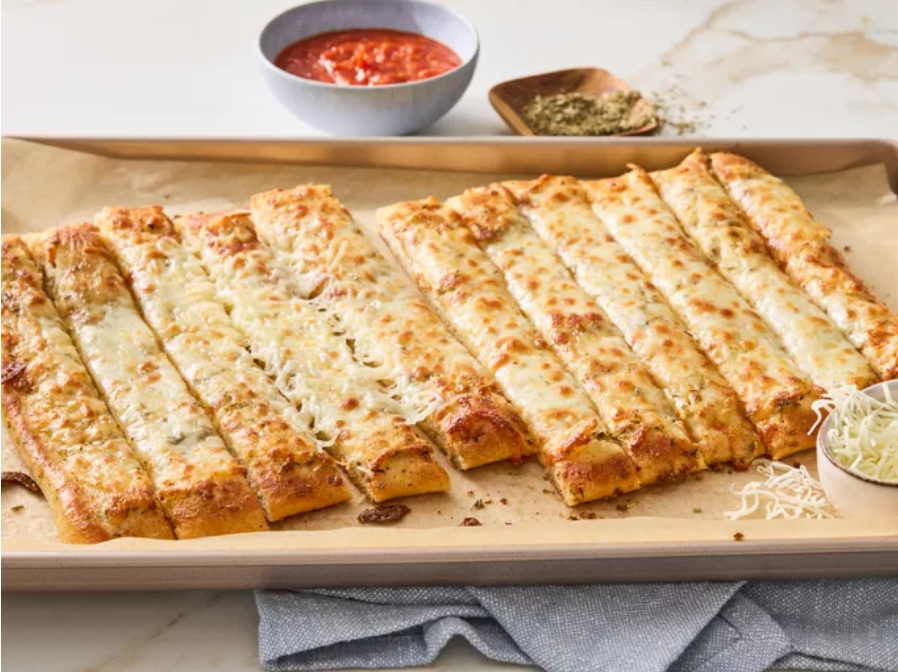

BBQ Chicken Pizza

These pizza dough breadsticks are quick and easy to make and kids love them. I like to top mine off with Mozzarella cheese but served plain with just seasonings they are equally as delicious.
Just eat it. lol.
- 1 (13.8 oz) can refrigerated pizza crust (such as Pillsbury)
- 2 tablespoons butter, melted
- 1 teaspoon Italian seasoning
- 1 teaspoon garlic powder
- 1 1/2 cups mozzarella cheese, shredded (optional)
Steps
- Step 1: Gather all ingredients.
- Step 2: Preheat the oven to 400 degrees F (200 degrees C). Line a baking sheet with parchment paper and set aside
- Step 3: Roll out pizza dough into an approximate 8 x 12-inch rectangle and place on prepared baking sheet.
- Step 4: Pre-bake pizza dough for 10 minutes.
- Step 5: Mix butter, Italian seasoning, and garlic powder in a small bowl until well combined.
Back